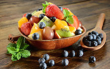

Easy Fruit Salad
35 minutes
4 Servings
Ingredients
- 1banana
- 1cup grapes
- 1cup strawberries
- ¼cup orange juice
Directions
- Slice 1 banana and add to a large bowl.
- Add 1 cup of grapes to bowl.
- Slice 1 cup of strawberries and add to bowl.
- Pour ¼ cups of orange juice over the fruit and mix to coat.
- Cover and refrigerate for 30 minutes.